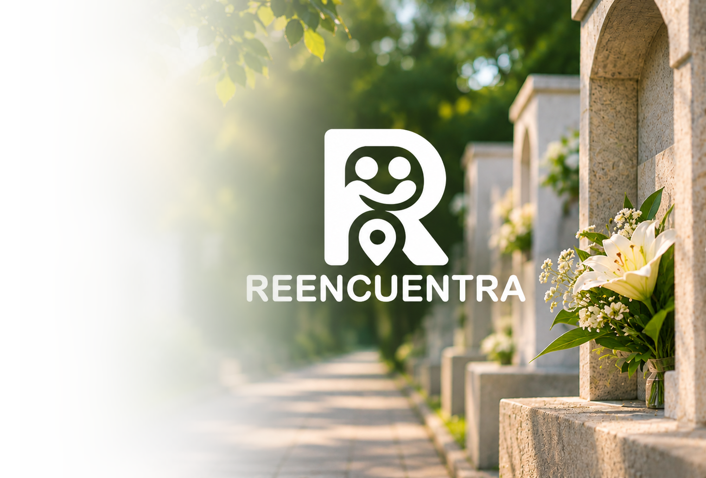

ENCUENTRA . RECUERDA . VISITA
Ubica fácilmente a tu ser querido dentro del cementerio y realiza una visita más tranquila, sin perder tiempo.

Encuentra al ser querido por su nombre y apellidos.
Visualiza pabellón, fila, número y la ruta hasta el nicho.
Reporta necesidades de limpieza o mantenimiento.
Accede desde la entrada o puntos estratégicos del cementerio.
Consulta la información registrada por la administración.
Sigue la ubicación y la ruta indicada.
Explora REENCUENTRA y descubre cómo buscar a tu ser querido, encontrar su ubicación y realizar solicitudes de manera fácil y rápida.
Kira Curisinche
Patty Tembladera
Nicole Canales
Estephanie Huaman
Diana Cristobal
Aracely Villegas